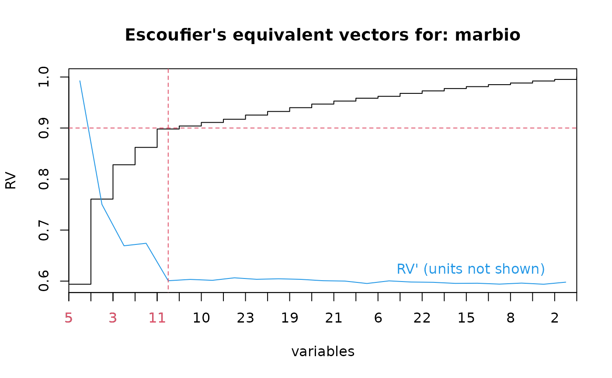

Choose variables using the Escoufier's equivalent vectors method
escouf.RdCalculate equivalent vectors sensu Escoufier, that is, most significant variables from a multivariate data frame according to a principal component analysis (variables that are most correlated with the principal axes). This method is useful mainly for physical or chemical data where simply summarizing them with a PCA does not always gives easily interpretable principal axes.
escouf(x, level=1, verbose=TRUE)
# S3 method for class 'escouf'
print(x, ...)
# S3 method for class 'escouf'
summary(object, ...)
# S3 method for class 'summary.escouf'
print(x, ...)
# S3 method for class 'escouf'
plot(x, level=x$level, lhorz=TRUE, lvert=TRUE, lvars=TRUE,
lcol=2, llty=2, diff=TRUE, dlab="RV' (units not shown)", dcol=4,
dlty=par("lty"), dpos=0.8, type="s", xlab="variables", ylab="RV",
main=paste("Escoufier's equivalent vectors for:",x$data), ...)
# S3 method for class 'escouf'
lines(x, level=x$level, lhorz=TRUE, lvert=TRUE, lvars=TRUE,
col=2, lty=2, ...)
# S3 method for class 'escouf'
identify(x, lhorz=TRUE, lvert=TRUE, lvars=TRUE, col=2,
lty=2, ...)
# S3 method for class 'escouf'
extract(e, n, level=e$level, ...)Arguments
- x
For
escouf(), a data frame containing the variables to sort according to the Escoufier's method. For the other functions, an 'escouf' object- level
The level of correlation at which to stop calculation. By default
level=1, the highest value, and all variables are sorted. Specify a value lower than one to speed up calculation. If you specify a too low values you will not be able to extract all significant variables (extraction level must be lower than calculation level). We advise you keep 0.95 < level < 1- verbose
Print calculation steps. This allows to control the percentage of calculation already achieved when computation takes a long time (that is, with many variables to sort)
- object
An 'escouf' object returned by
escouf- e
An 'escouf' object returned by
escouf- lhorz
If
TRUEthen an horizontal line indicating the extraction level is drawn- lvert
If
TRUEthen a vertical line separate the n extracted variables at left from the rest- lvars
If
TRUEthen the x-axis labels of the n extracted variables at left are printed in a different color to emphasize them- lcol
The color to use to draw the lines (
lhorz=TRUEandlvert=TRUE) and the variables labels (lvars=TRUE) of the n extracted variables. By default, color 2 is used- llty
The style used to draw the lines (
lhorz=TRUEandlvert=TRUE). By default, lines are dashed- diff
If
TRUEthen the RV' curve is also plotted (by default)- dlab
The label to use for the RV' curve. By default:
"RV' (units not shown)"- dcol
The color to use for the RV' curve (by default, color 4 is used)
- type
The type of graph to plot
- xlab
the label of the x-axis
- ylab
the label of the y-axis
- main
the main title of the graph
- dlty
The style for the RV' curve
- col
The color to use to draw the lines (
lhorz=TRUEandlvert=TRUE) and the variables labels (lvars=TRUE) of the n extracted variables. By default, color 2 is used- lty
The style used to draw the lines (
lhorz=TRUEandlvert=TRUE). By default, lines are dashed- dpos
The relative horizontal position of the label for the RV' curve. The default value of 0.8 means that the label is placed at 80% of the horizontal axis.Vertical position of the label is automatically determined
- n
The number of variables to extract. If a value is given, it has the priority on
level- ...
additional parameters
Value
An object of type 'escouf' is returned. It has methods print(), summary(), plot(), lines(), identify(), extract().
References
Cambon, J., 1974. Vecteur équivalent à un autre au sens des composantes principales. Application hydrologique. DEA de Mathématiques Appliquées, Université de Montpellier.
Escoufier, Y., 1970. Echantillonnage dans une population de variables aléatoires réelles. Pub. Inst. Stat. Univ. Paris, 19:1-47.
Jabaud, A., 1996. Cadre climatique et hydrobiologique du lac Léman. DEA d'Océanologie Biologique Paris.
WARNING
Since a large number of iterations is done, this function is slow with a large number of variables (more than 25-30)!
See also
Examples
data(marbio)
marbio.esc <- escouf(marbio)
#> Variable 5 incorporated, RV = 0.5938735
#> Variable 9 incorporated, RV = 0.7607149
#> Variable 3 incorporated, RV = 0.8280316
#> Variable 17 incorporated, RV = 0.8620636
#> Variable 11 incorporated, RV = 0.8981089
#> Variable 13 incorporated, RV = 0.9039953
#> Variable 10 incorporated, RV = 0.9109498
#> Variable 7 incorporated, RV = 0.917168
#> Variable 23 incorporated, RV = 0.9254146
#> Variable 1 incorporated, RV = 0.932456
#> Variable 19 incorporated, RV = 0.9399177
#> Variable 4 incorporated, RV = 0.9469293
#> Variable 21 incorporated, RV = 0.952844
#> Variable 20 incorporated, RV = 0.9584662
#> Variable 6 incorporated, RV = 0.9621404
#> Variable 14 incorporated, RV = 0.9679197
#> Variable 22 incorporated, RV = 0.9727763
#> Variable 24 incorporated, RV = 0.9773901
#> Variable 15 incorporated, RV = 0.981146
#> Variable 18 incorporated, RV = 0.9850263
#> Variable 8 incorporated, RV = 0.9882042
#> Variable 16 incorporated, RV = 0.9921904
#> Variable 2 incorporated, RV = 0.9952681
#> Variable 12 incorporated, RV = 1
summary(marbio.esc)
#>
#> Escoufier's method of equivalent vectors for: marbio
#>
#> Calculation level: 1
#> 24 variable(s) calculated on a total of 24
#> RV:
#> Copepodits3 ClausocalanusB Copepodits1
#> 0.5938735 0.7607149 0.8280316
#> EchinodermsLarvae AdultsOfCentropages Nauplii
#> 0.8620636 0.8981089 0.9039953
#> ClausocalanusC Copepodits5 Siphonophores
#> 0.9109498 0.9171680 0.9254146
#> Acartia GasteropodsLarvae Copepodits2
#> 0.9324560 0.9399177 0.9469293
#> Ostracods EggsOfCrustaceans Copepodits4
#> 0.9528440 0.9584662 0.9621404
#> Oithona Pteropods BellsOfCalycophores
#> 0.9679197 0.9727763 0.9773901
#> Acanthaires DecapodsLarvae ClausocalanusA
#> 0.9811460 0.9850263 0.9882042
#> Cladocerans AdultsOfCalanus JuvenilesOfCentropages
#> 0.9921904 0.9952681 1.0000000
plot(marbio.esc)
# The x-axis has short labels. For more info., enter:
marbio.esc$vr
#> Copepodits3 ClausocalanusB Copepodits1
#> 5 9 3
#> EchinodermsLarvae AdultsOfCentropages Nauplii
#> 17 11 13
#> ClausocalanusC Copepodits5 Siphonophores
#> 10 7 23
#> Acartia GasteropodsLarvae Copepodits2
#> 1 19 4
#> Ostracods EggsOfCrustaceans Copepodits4
#> 21 20 6
#> Oithona Pteropods BellsOfCalycophores
#> 14 22 24
#> Acanthaires DecapodsLarvae ClausocalanusA
#> 15 18 8
#> Cladocerans AdultsOfCalanus JuvenilesOfCentropages
#> 16 2 12
# Define a level at which to extract most significant variables
marbio.esc$level <- 0.90
# Show it on the graph
lines(marbio.esc)

# This can also be done interactively on the plot using:
# marbio.esc$level <- identify(marbio.esc)
# Finally, extract most significant variables
marbio2 <- extract(marbio.esc)
names(marbio2)
#> [1] "Copepodits3" "ClausocalanusB" "Copepodits1"
#> [4] "EchinodermsLarvae" "AdultsOfCentropages"